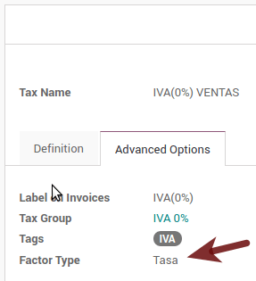

Примечание
This documentation is written assuming that you follow and know the official documentation regarding Invoicing, Sales and Accounting and that you have experience working with odoo on such areas, we are not intended to put here procedures that are already explained on those documents, just the information necessary to allow you use odoo in a Company with the country "Mexico" set.
Introduction
The mexican localization is a group of 3 modules:
- l10n_mx: All the basic data to manage the accounting, taxes and the chart of account, this proposed chart of account installed is a intended copy of the list of group codes offered by the SAT.
- l10n_mx_edi: All regarding to electronic transactions, CFDI 3.2 and 3.3, payment complement, invoice addendum.
- l10n_mx_reports: All mandatory electronic reports for electronic accounting are here (Accounting app required).
With the Mexican localization in Odoo you will be able not just to comply with the required features by law in México but to use it as your accounting and invoicing system due to all the set of normal requirements for this market, becoming your Odoo in the perfect solution to administer your company in Mexico.
Configuration
Совет
After the configuration we will give you the process to test everything, try to follow step by step in order to allow you to avoid expend time on fix debugging problems. In any step you can recall the step and try again.
1. Install the Mexican Accounting Localization
For this, go in Apps and search for Mexico. Then click on Install.

Совет
When creating a database from www.odoo.com, if you choose Mexico as country when creating your account, the mexican localization will be automatically installed.
2. Electronic Invoices (CDFI 3.2 and 3.3 format)
To enable this requirement in Mexico go to configuration in accounting Go in and enable the option on the image with this you will be able to generate the signed invoice (CFDI 3.2 and 3.3) and generate the payment complement signed as well (3.3 only) all fully integrate with the normal invoicing flow in Odoo.

3. Set you legal information in the company
First, make sure that your company is configured with the correct data. Go in and enter a valid address and VAT for your company. Don’t forget to define a mexican fiscal position on your company’s contact.
Совет
If you want use the Mexican localization on test mode, you can put any known address inside Mexico with all fields for the company address and set the vat to ACO560518KW7.
4. Set the proper "Fiscal Position" on the partner that represent the company
Go In the same form where you are editing the company save the record in order to set this form as a readonly and on readonly view click on the partner link, then edit it and set in the Invoicing tab the proper Fiscal Information (for the Test Environment this must be 601 - General de Ley Personas Morales, just search it as a normal Odoo field if you can't see the option).
5. Enabling CFDI Version 3.3
Предупреждение
This steps are only necessary when you will enable the CFDI 3.3 (only available for V11.0 and above) if you do not have Version 11.0 or above on your SaaS instance please ask for an upgrade sending a ticket to support in https://www.odoo.com/help.
Enable debug mode:
Go and look the following technical parameter, on and set the parameter called l10n_mx_edi_cfdi_version to 3.3 (Create it if the entry with this name does not exist).
Предупреждение
The CFDI 3.2 will be legally possible until November 30th 2017 enable the 3.3 version will be a mandatory step to comply with the new SAT resolution in any new database created since v11.0 released CFDI 3.3 is the default behavior.

Important considerations when yo enable the CFDI 3.3
Your tax which represent the VAT 16% and 0% must have the "Factor Type" field set to "Tasa".
You must go to the Fiscal Position configuration and set the proper code (it is the first 3 numbers in the name) for example for the test one you should set 601, it will look like the image.

All products must have for CFDI 3.3 the "SAT code" and the field "Reference" properly set, you can export them and re import them to do it faster.

6. Configure the PAC in order to sign properly the invoices
To configure the EDI with the PACs, you can go in . You can choose a PAC within the List of supported PACs on the PAC field and then enter your PAC username and PAC password.
Предупреждение
Remember you must sign up in the refereed PAC before hand, that process can be done with the PAC itself on this case we will have two (2) availables Finkok and Solución Factible.
You must process your Private Key (CSD) with the SAT institution before follow this steps, if you do not have such information please try all the "Steps for Test" and come back to this process when you finish the process proposed for the SAT in order to set this information for your production environment with real transactions.

Совет
If you ticked the box MX PAC test environment there is no need to enter a PAC username or password.
Совет
Here is a SAT certificate you can use if you want to use the Test Environment for the Mexican Accounting Localization.
- Certificate
- Certificate Key
- Password : 12345678a
7. Configure the tag in sales taxes
This tag is used to set the tax type code, transferred or withhold, applicable to the concept in the CFDI. So, if the tax is a sale tax the "Tag" field should be "IVA", "ISR" or "IEPS".

Note that the default taxes already has a tag assigned, but when you create a new tax you should choose a tag.
Usage and testing
Invoicing
To use the mexican invoicing you just need to do a normal invoice following the normal Odoo's behaviour.
Once you validate your first invoice a correctly signed invoice should look like this:
You can generate the PDF just clicking on the Print button on the invoice or sending it by email following the normal process on odoo to send your invoice by email.

Once you send the electronic invoice by email this is the way it should looks like.

Cancelling invoices
The cancellation process is completely linked to the normal cancellation in Odoo.
If the invoice is not paid.
- Go to to the customer invoice journal where the invoice belong to
- Check the "Allow cancelling entries" field
- Go back to your invoice and click on the button "Cancel Invoice"

- For security reasons it is recommendable return the check on the to allow cancelling to false again, then go to the journal and un check such field.
Legal considerations
- A cancelled invoice will automatically cancelled on the SAT.
- If you retry to use the same invoice after cancelled, you will have as much cancelled CFDI as you tried, then all those xml are important to maintain a good control of the cancellation reasons.
- You must unlink all related payment done to an invoice on odoo before cancel such document, this payments must be cancelled to following the same approach but setting the "Allow Cancel Entries" in the payment itself.
Payments (Just available for CFDI 3.3)
To generate the payment complement you just must to follow the normal payment process in Odoo, this considerations to understand the behavior are important.
- All payment done in the same day of the invoice will be considered as It will not be signed, because It is the expected behavior legally required for "Cash payment".
- To test a regular signed payment just create an invoice for the day before today and then pay it today.
- You must print the payment in order to retrieve the PDF properly.
- Regarding the "Payments in Advance" you must create a proper invoice with the payment in advance itself as a product line setting the proper SAT code following the procedure on the official documentation given by the SAT in the section Apéndice 2 Procedimiento para la emisión de los CFDI en el caso de anticipos recibidos.
- Related to topic 4 it is blocked the possibility to create a Customer Payment without a proper invoice.
Accounting
The accounting for Mexico in odoo is composed by 3 reports:
- Chart of Account (Called and shown as COA).
- Electronic Trial Balance.
- DIOT report.
1 and 2 are considered as the electronic accounting, and the DIOT is a report only available on the context of the accounting.
You can find all those reports in the original report menu on Accounting app.

Electronic Accounting (Requires Accounting App)
Electronic Chart of account CoA
The electronic accounting never has been easier, just go to and click on the button Export for SAT (XML)
How to add new accounts?
If you add an account with the coding convention NNN.YY.ZZ where NNN.YY is a SAT coding group then your account will be automatically configured.
Example to add an Account for a new Bank account go to and then create a new account on the button "Create" and try to create an account with the number 102.01.99 once you change to set the name you will see a tag automatically set, the tags set are the one picked to be used in the COA on xml.

What is the meaning of the tag?
To know all possible tags you can read the Anexo 24 in the SAT website on the section called Código agrupador de cuentas del SAT.
Совет
When you install the module l10n_mx and yous Chart of Account rely on it (this happen automatically when you install setting Mexico as country on your database) then you will have the more common tags if the tag you need is not created you can create one on the fly.
Electronic Trial Balance
Exactly as the COA but with Initial balance debit and credit, once you have your coa properly set you can go to this is automatically generated, and can be exported to XML using the button in the top Export for SAT (XML) with the previous selection of the period you want to export.
All the normal auditory and analysis features are available here also as any regular Odoo Report.
DIOT Report (Requires Accounting App)
What is the DIOT and the importance of presenting it SAT
When it comes to procedures with the SAT Administration Service we know that we should not neglect what we present. So that things should not happen in Odoo.
The DIOT is the Informational Statement of Operations with Third Parties (DIOT), which is an an additional obligation with the VAT, where we must give the status of our operations to third parties, or what is considered the same, with our providers.
This applies both to individuals and to the moral as well, so if we have VAT for submitting to the SAT and also dealing with suppliers it is necessary to. submit the DIOT:
When to file the DIOT and in what format?
It is simple to present the DIOT, since like all format this you can obtain it in the page of the SAT, it is the electronic format A-29 that you can find in the SAT website.
Every month if you have operations with third parties it is necessary to present the DIOT, just as we do with VAT, so that if in January we have deals with suppliers, by February we must present the information pertinent to said data.
Where the DIOT is presented?
You can present DIOT in different ways, it is up to you which one you will choose and which will be more comfortable for you than you will present every month or every time you have dealings with suppliers.
The A-29 format is electronic so you can present it on the SAT page, but this after having made up to 500 records.
Once these 500 records are entered in the SAT, you must present them to the Local Taxpayer Services Administration (ALSC) with correspondence to your tax address, these records can be presented in a digital storage medium such as a CD or USB, which once validated you will be returned, so do not doubt that you will still have these records and of course, your CD or USB.
One more fact to know: the Batch load?
When reviewing the official SAT documents on DIOT, you will find the Batch load, and of course the first thing we think is what is that ?, and according to the SAT site is:
The "batch upload" is the conversion of records databases of transactions with suppliers made by taxpayers in text files (.txt). These files have the necessary structure for their application and importation into the system of the Informative Declaration of Operations with third parties, avoiding the direct capture and consequently, optimizing the time invested in its integration for the presentation in time and form to the SAT.
You can use it to present the DIOT, since it is allowed, which will make this operation easier for you, so that it does not exist to avoid being in line with the SAT in regard to the Information Statement of Operations with Third Parties.
You can find the official information here.
How Generate this report in odoo?
- Go to .

- A report view is shown, select last month to report the immediate before month you are or left the current month if it suits to you.
- Click on "Export (TXT).

- Save in a secure place the downloaded file and go to SAT website and follow the necessary steps to declare it.
Important considerations on your Supplier and Invice data for the DIOT
- All suppliers must have set the fields on the accounting tab called "DIOT Information", the L10N Mx Nationality field is filled with just select the proper country in the address, you do not need to do anything else there, but the L10N Mx Type Of Operation must be filled by you in all your suppliers.

- There are 3 options of VAT for this report, 16%, 0% and exempt, an invoice line in odoo is considered exempt if no tax on it, the other 2 taxes are properly configured already.
- Remember to pay an invoice which represent a payment in advance you must ask for the invoice first and then pay it and reconcile properly the payment following standard odoo procedure.
- You do not need all you data on partners filled to try to generate the supplier invoice, you can fix this information when you generate the report itself.
- Remember this report only shows the Supplier Invoices that were actually paid.
If some of this considerations are not taken into account a message like this will appear when generate the DIOT on TXT with all the partners you need to check on this particular report, this is the reason we recommend use this report not just to export your legal obligation but to generate it before the end of the month and use it as your auditory process to see all your partners are correctly set.

Extra Recommended features
Contact Module (Free)
If you want to administer properly your customers, suppliers and addresses this module even if it is not a technical need, it is highly recommended to install.
Multi currency (Requires Accounting App)
In Mexico almost all companies send and receive payments in different currencies if you want to manage such capability you should enable the multi currency feature and you should enable the synchronization with Banxico, such feature allow you retrieve the proper exchange rate automatically retrieved from SAT and not being worried of put such information daily in the system manually.
Go to settings and enable the multi currency feature.
Enabling Explicit errors on the CFDI using the XSD local validator (CFDI 3.3)
Frequently you want receive explicit errors from the fields incorrectly set on the xml, those errors are better informed to the user if the check is enable, to enable the Check with xsd feature follow the next steps (with debug mode enabled).
- Go to
- Look for the Action called "Download XSD files to CFDI"
- Click on button "Create Contextual Action"
- Go to the company form
- Open any company you have.
- Click on "Action" and then on "Download XSD file to CFDI".
Now you can make an invoice with any error (for example a product without code which is pretty common) and an explicit error will be shown instead a generic one with no explanation.
Примечание
If you see an error like this:
The cfdi generated is not valid
attribute decl. 'TipoRelacion', attribute 'type': The QName value '{http://www.sat.gob.mx/sitio_internet/cfd/catalogos}c_TipoRelacion' does not resolve to a(n) simple type definition., line 36
This can be caused because of a database backup restored in anothe server, or when the XSD files are not correctly downloaded. Follow the same steps as above but:
- Go to the company in which the error occurs.
- Click on "Action" and then on "Download XSD file to CFDI".
FAQ
- Error message (Only applicable on CFDI 3.3):
:9:0:ERROR:SCHEMASV:SCHEMAV_CVC_MINLENGTH_VALID: Element '{http://www.sat.gob.mx/cfd/3}Concepto', attribute 'NoIdentificacion': [facet 'minLength'] The value '' has a length of '0'; this underruns the allowed minimum length of '1'.
:9:0:ERROR:SCHEMASV:SCHEMAV_CVC_PATTERN_VALID: Element '{http://www.sat.gob.mx/cfd/3}Concepto', attribute 'NoIdentificacion': [facet 'pattern'] The value '' is not accepted by the pattern '[^|]{1,100}'.
Совет
Solution: You forget to set the proper "Reference" field in the product, please go to the product form and set your internal reference properly.
- Error message:
:6:0:ERROR:SCHEMASV:SCHEMAV_CVC_COMPLEX_TYPE_4: Element '{http://www.sat.gob.mx/cfd/3}RegimenFiscal': The attribute 'Regimen' is required but missing.
:5:0:ERROR:SCHEMASV:SCHEMAV_CVC_COMPLEX_TYPE_4: Element '{http://www.sat.gob.mx/cfd/3}Emisor': The attribute 'RegimenFiscal' is required but missing.
Совет
Solution: You forget to set the proper "Fiscal Position" on the partner of the company, go to customers, remove the customer filter and look for the partner called as your company and set the proper fiscal position which is the kind of business you company does related to SAT list of possible values, antoher option can be that you forgot follow the considerations about fiscal positions.
Yo must go to the Fiscal Position configuration and set the proper code (it is the first 3 numbers in the name) for example for the test one you should set 601, it will look like the image.

Совет
For testing purposes this value must be 601 - General de Ley Personas Morales which is the one required for the demo VAT.
- Error message:
:2:0:ERROR:SCHEMASV:SCHEMAV_CVC_ENUMERATION_VALID: Element '{http://www.sat.gob.mx/cfd/3}Comprobante', attribute 'FormaPago': [facet 'enumeration'] The value '' is not an element of the set {'01', '02', '03', '04', '05', '06', '08', '12', '13', '14', '15', '17', '23', '24', '25', '26', '27', '28', '29', '30', '99'}
Совет
Solution: The payment method is required on your invoice.

- Error message:
:2:0:ERROR:SCHEMASV:SCHEMAV_CVC_ENUMERATION_VALID: Element '{http://www.sat.gob.mx/cfd/3}Comprobante', attribute 'LugarExpedicion': [facet 'enumeration'] The value '' is not an element of the set {'00 :2:0:ERROR:SCHEMASV:SCHEMAV_CVC_DATATYPE_VALID_1_2_1: Element '{http://www.sat.gob.mx/cfd/3}Comprobante', attribute 'LugarExpedicion': '' is not a valid value of the atomic type '{http://www.sat.gob.mx/sitio_internet/cfd/catalogos}c_CodigoPostal'. :5:0:ERROR:SCHEMASV:SCHEMAV_CVC_COMPLEX_TYPE_4: Element '{http://www.sat.gob.mx/cfd/3}Emisor': The attribute 'Rfc' is required but missing.
Совет
Solution: You must set the address on your company properly, this is a mandatory group of fields, you can go to your company configuration on and fill all the required fields for your address following the step 3. Set you legal information in the company.
- Error message:
:2:0:ERROR:SCHEMASV:SCHEMAV_CVC_DATATYPE_VALID_1_2_1: Element '{http://www.sat.gob.mx/cfd/3}Comprobante', attribute 'LugarExpedicion': '' is not a valid value of the atomic type '{http://www.sat.gob.mx/sitio_internet/cfd/catalogos}c_CodigoPostal'.
Совет
Solution: The postal code on your company address is not a valid one for Mexico, fix it.
- Error message:
:18:0:ERROR:SCHEMASV:SCHEMAV_CVC_COMPLEX_TYPE_4: Element '{http://www.sat.gob.mx/cfd/3}Traslado': The attribute 'TipoFactor' is required but missing. :34:0:ERROR:SCHEMASV:SCHEMAV_CVC_COMPLEX_TYPE_4: Element '{http://www.sat.gob.mx/cfd/3}Traslado': The attribute 'TipoFactor' is required but missing.", '')
Совет
Solution: Set the mexican name for the tax 0% and 16% in your system and used on the invoice.
Your tax which represent the VAT 16% and 0% must have the "Factor Type" field set to "Tasa".